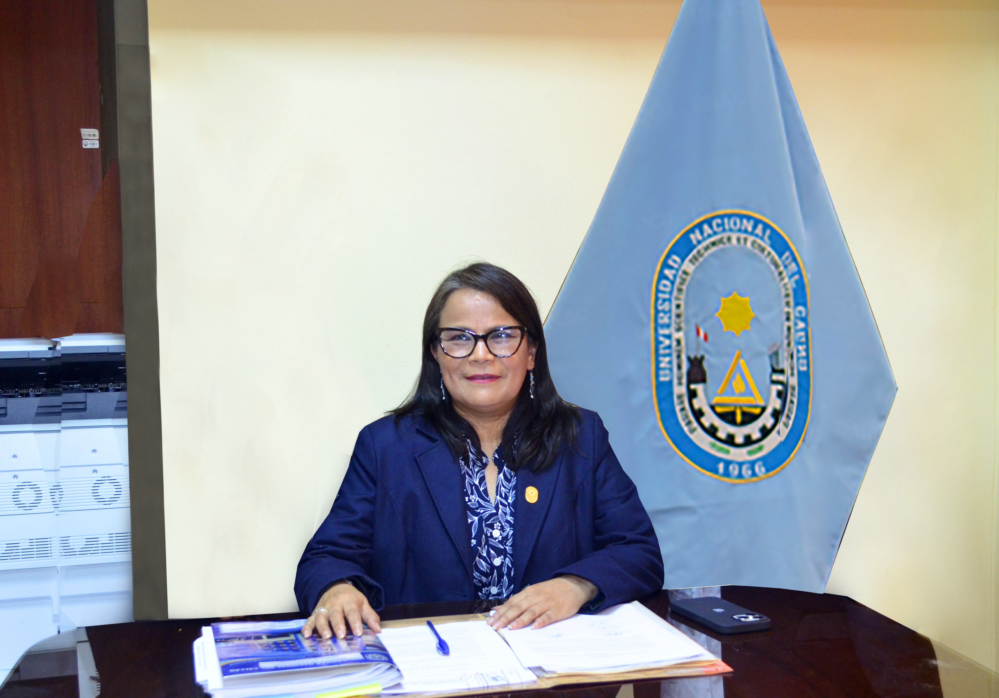
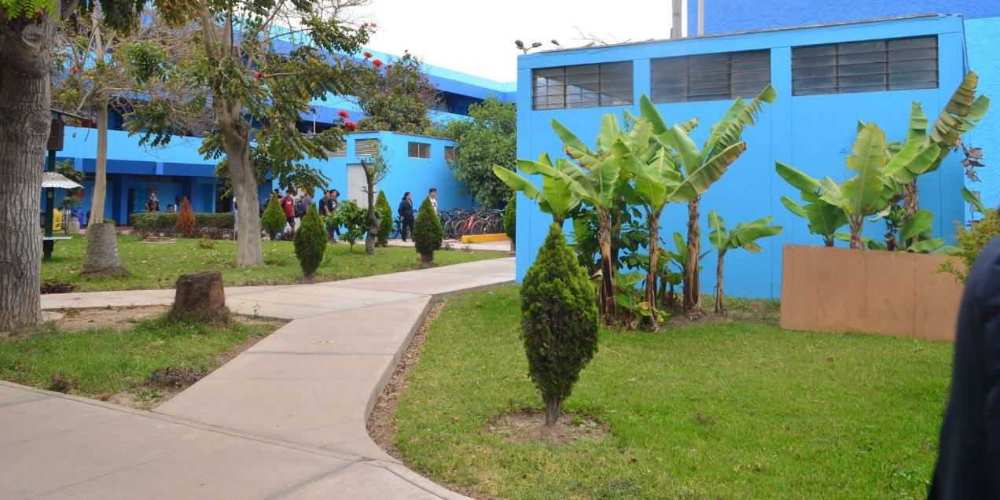
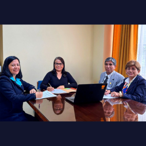
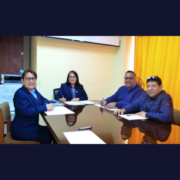

Dra. Katia Vigo Ingar
Directora de la Unidad de Investigación
Unidad de Investigación
La Unidad de Investigación de la Escuela de Posgrado de la Universidad Nacional del Callao impulsa la generación de conocimiento innovador mediante proyectos interdisciplinarios que integran a estudiantes, docentes e investigadores. Fortalece las capacidades investigativas, difunde resultados a través de actividades académicas y facilita el acceso a recursos y redes, contribuyendo al desarrollo sostenible y al avance científico, social y cultural del país.
Misión
Formar profesionales, generando y promoviendo la investigación científica, tecnológica y humanística, en los estudiantes universitarios con calidad, competitividad y responsabilidad social para el desarrollo sostenible del país.
Visión
Ser una universidad acreditada y con liderazgo a nivel nacional e internacional, con docentes altamente competitivos calificados y con infraestructura moderna, que se desarrolla en alianzas estratégicas con instituciones públicas y privadas.



Recursos de la Unidad
Capacitaciones del SGI
Conferencias
Marcas y Empresas Colaboradoras
Algunas de las instituciones y empresas que colaboran con la Unidad de Investigación